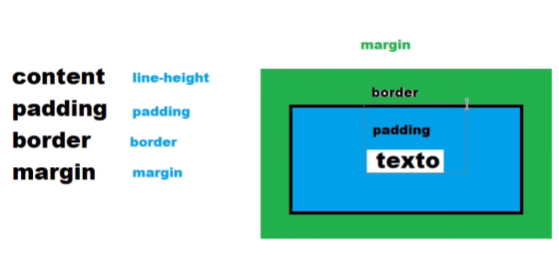

INTRODUCCIÓN
Las hojas de estilo en cascada (CSS, cascading style sheets) permiten crear páginas web atractivas, el selector universal es *{} con el cual las modificaciones afectan a toda la página.
El selector por clase es cuando una etiqueta tiene el atributo class="nombreClase" podemos modificar la etiqueta con el nombre de la clase con un punto por delante .nombreClase{}.
El selector por identificador es cuando una etiqueta tiene el atributo id="nombreID" podemos modificar la etiqueta con el nombre de la clase con un # por delante #nombreClase{}. El identificador es único y no puede haber dos iguales.
El selector por atributo de etiqueta se pone entre corchetes el atributo y su valor [atributo="nombreAtributo"]{}.
El selector por elemento es cuando introducimos el nombre de la etiqueta nombreEtiqueta{}.
Selector por orden descendiente es cuando anteponemos un atributo o nombre de clase y especificamos otros elementos dentro para ser más específicos elementoPadre elementoHijo ...{}.
La pseudo-clases se activan poniendo ':' y el nombre de la pseudo-clase nombreElemento:nombrePseudoClase{}.
| Selector | Example | Example description |
|---|---|---|
| .class | .intro | Selects all elements with class="intro" |
| .class1.class2 | .name1.name2 | Selects all elements with both name1 and name2 set within its class attribute |
| .class1 .class2 | .name1 .name2 | Selects all elements with name2 that is a descendant of an element with name1 |
| #id | #firstname | Selects the element with id="firstname" |
| * | * | Selects all elements |
| element | p | Selects all <p> elements |
| element.class | p.intro | Selects all <p> elements with class="intro" |
| element,element | div, p | Selects all <div> elements and all <p> elements |
| element element | div p | Selects all <p> elements inside <div> elements |
| element>element | div > p | Selects all <p> elements where the parent is a <div> element |
| element+element | div + p | Selects the first <p> element that is placed immediately after <div> elements |
| element1~element2 | p ~ ul | Selects every <ul> element that is preceded by a <p> element |
| [attribute] | [target] | Selects all elements with a target attribute |
| [attribute=value] | [target="_blank"] | Selects all elements with target="_blank" |
| [attribute~=value] | [title~="flower"] | Selects all elements with a title attribute containing the word "flower" |
| [attribute|=value] | [lang|="en"] | Selects all elements with a lang attribute value equal to "en" or starting with "en-" |
| [attribute^=value] | a[href^="https"] | Selects every <a> element whose href attribute value begins with "https" |
| [attribute$=value] | a[href$=".pdf"] | Selects every <a> element whose href attribute value ends with ".pdf" |
| [attribute*=value] | a[href*="w3schools"] | Selects every <a> element whose href attribute value contains the substring "w3schools" |
| :active | a:active | Selects the active link |
| ::after | p::after | Insert something after the content of each <p> element |
| ::before | p::before | Insert something before the content of each <p> element |
| :checked | input:checked | Selects every checked <input> element |
| :default | input:default | Selects the default <input> element |
| :disabled | input:disabled | Selects every disabled <input> element |
| :empty | p:empty | Selects every <p> element that has no children (including text nodes) |
| :enabled | input:enabled | Selects every enabled <input> element |
| :first-child | p:first-child | Selects every <p> element that is the first child of its parent |
| ::first-letter | p::first-letter | Selects the first letter of every <p> element |
| ::first-line | p::first-line | Selects the first line of every <p> element |
| :first-of-type | p:first-of-type | Selects every <p> element that is the first <p> element of its parent |
| :focus | input:focus | Selects the input element which has focus |
| :fullscreen | :fullscreen | Selects the element that is in full-screen mode |
| :hover | a:hover | Selects links on mouse over |
| :in-range | input:in-range | Selects input elements with a value within a specified range |
| :indeterminate | input:indeterminate | Selects input elements that are in an indeterminate state |
| :invalid | input:invalid | Selects all input elements with an invalid value |
| :lang(language) | p:lang(it) | Selects every <p> element with a lang attribute equal to "it" (Italian) |
| :last-child | p:last-child | Selects every <p> element that is the last child of its parent |
| :last-of-type | p:last-of-type | Selects every <p> element that is the last <p> element of its parent |
| :link | a:link | Selects all unvisited links |
| ::marker | ::marker | Selects the markers of list items |
| :not(selector) | :not(p) | Selects every element that is not a <p> element |
| :nth-child(n) | p:nth-child(2) | Selects every <p> element that is the second child of its parent |
| :nth-last-child(n) | p:nth-last-child(2) | Selects every <p> element that is the second child of its parent, counting from the last child |
| :nth-last-of-type(n) | p:nth-last-of-type(2) | Selects every <p> element that is the second <p> element of its parent, counting from the last child |
| :nth-of-type(n) | p:nth-of-type(2) | Selects every <p> element that is the second <p> element of its parent |
| :only-of-type | p:only-of-type | Selects every <p> element that is the only <p> element of its parent |
| :only-child | p:only-child | Selects every <p> element that is the only child of its parent |
| :optional | input:optional | Selects input elements with no "required" attribute |
| :out-of-range | input:out-of-range | Selects input elements with a value outside a specified range |
| ::placeholder | input::placeholder | Selects input elements with the "placeholder" attribute specified |
| :read-only | input:read-only | Selects input elements with the "readonly" attribute specified |
| :read-write | input:read-write | Selects input elements with the "readonly" attribute NOT specified |
| :required | input:required | Selects input elements with the "required" attribute specified |
| :root | :root | Selects the document's root element |
| ::selection | ::selection | Selects the portion of an element that is selected by a user |
| :target | #news:target | Selects the current active #news element (clicked on a URL containing that anchor name) |
| :valid | input:valid | Selects all input elements with a valid value |
| :visited | a:visited | Selects all visited links |
ESPECIFICIDAD
La especifidad es la forma que podemos cambiar los elementos sin a afectar a otros, los selectores que pertenecen a un mismo grupo de jerarquía, se establece la dinámica de CSS para realizar los cambios en cascada, pero en caso se difiera por elementos superiores en jerarquía entonces se establecerá los cambios por orden de jerarquía. Los estilos en línea son aquellos atributos style="color=red" que se ponen dentro de los atributos de un elemento. El !important va al lado de un atributo en la hoja de estilos *{color: red; !important}

METODOLOGÍA BEM
La metodología BEM es una convención para poder identificar elementos de la página HTML para tener una manera más ordenada al momento de usar los selectores en CSS. Algo importante es que se identifican los elementos por clases, entonces el nombre de clase del contenedor padre por ejemplo class="contenedor-padre" sería algo asi, en cambio del hijo sería algo asi class="contenedor-padre__contendor-hijo", si nos basamos en esta lógica los contenedores "nietos" y los que le siguen sería algo asi class="contenedor-padre__contendor-hijo-nieto", ahora si queremos diferenciar un grupo de elementos que llevan el mismo nombre de clase por ejemplo este class="contenedor-padre__contendor-hijo-nieto", tenemos cuatro elementos igual y queremos seleccionar solo el primero entonces lo nombraríamos algo así class="contenedor-padre__contendor-hijo-nieto--active", tambien hay otra manera, pero en la hoja de estilos contenedor-padre__contendor-hijo-nieto:first-child{}.
UNIDADES DE MEDIDA
La unidades de medidas que pueden ser en %, cm, mm, rem, em, px, etc. En este caso trataremos algunas, por ejemplo la medida relativa em, por defecto la mayoría de navegadores le da el valor de 16px a una unidad em, pero este a su vez puede ser modificado si es parte de un contenedor padre que modifique en pixeles o cualquier unidad estática al atributo deseado, la unidad en em del atributo será igual a la unidad puesta en el contenedor padre del mismo atributo.
El atributo font-size tamaño de letra, font-family es el tipo de letra si queremos personalizar otro tipo de fuentes podemos usar Google Fonts, se puede poner fuentes de respaldo usando comas y poniendo todos los tipos de fuentes posibles hasta que uno pueda encontrarse, line-height es la unidad del tamaño de letra, font-weight es el grosor del tipo de letra, algo como un bold. https://keepcoding.io/blog/unidades-de-medida-en-css/
Las unidades de medida absolutas son:
| Unidad | Descripción |
|---|---|
| in | hace referencia a las pulgadas, que son iguales a 2.54cm. |
| cm | se refiere a los centímetros. |
| mm | hace referencia a los milímetros. |
| q | se refiere a un cuarto de la unidad mm. 1q=0.248mm. |
| pt | un punto es igual a 1/72 de una pulgada o 0.35mm. |
| pc | una pica es igual a 12 puntos, o sea 4.23mm. |
| px | esta etiqueta se refiere a los píxeles que, aunque son absolutos (0.26mm), también son relativos a la densidad de la pantalla. |
Las unidades de medida relativas son:
| Unidad | Descripción |
|---|---|
| em | Esta unidad es relativa al tamaño de letra o font size establecida en el navegador. Su nombre es em porque el tamaño de letra se basa en el tamaño de la letra eme. A menos que haya sido modificada por el usuario, normalmente este tamaño es de 16px. |
| ex | Esta unidad es relativa a la altura de la «x» del elemento. También se conoce por ser más o menos la mitad del tamaño de la fuente del navegador o 0.5em. |
| ch | Conocido en inglés como zero width, esta unidad de medida es relativa al tamaño del ancho del cero en la fuente del navegador. |
| % | Esta unidad es relativa al tamaño del elemento padre. |
| rem | La unidad rem o root em es similar a la unidad em, pero, en vez de tomar como base el tamaño de letra del navegador, la unidad em toma el tamaño base del documento HTML. Este tamaño se personaliza bajo la etiqueta :root {font-size}. De este modo, podemos usar rem para dimensionar nuestros elementos con un múltiplo del tamaño base. |
Las unidades relativas del ViewPort
| Unidad | Descripción |
|---|---|
| vw | Como sigla de la unidad en inglés viewport width, esta unidad es relativa al ancho del viewport. |
| vh | Como sigla de la unidad en inglés viewport height, esta unidad es relativa a la altura del viewport. |
| vmin | Esta unidad, también conocida como viewport minimum, es relativa al factor que sea más pequeño entre el ancho y al alto del viewport. |
| vmax | Esta unidad, conocida como viewport maximum, es relativa al factor que sea más grande entre el ancho y el alto del viewport. Junto con vmin, esta unidad puede ser muy útil si queremos que nuestros diseños sean flexibles y se adapten al tamaño visible de la página web. |
RESET DE CSS
Para el Reset de CSS, es decir poner todo completamente por defecto se pueden utilizar algunas hojas de estilo predefinidas como el Normalize, existen otras maneras de poner todo por defecto, como el archivo https://github.com/eduardofierropro/Reset-CSS, del video de YouTube https://www.youtube.com/watch?v=Foieq2jTajE, del canal de Eduardo Fierro, que es el que utilizaremos, dentro del archivo podemos ver que tipo de modificaciones son las que haremos, hay algunas que no nos convendrían, todo depende de hasta donde queremos llegar y como lo queremos hacer.
ELEMENTOS EN LÍNEA Y EN BLOQUE
Elementos en línea y en bloque, el elemento en línea es aquel elemento que ocupa el espacio del contenido en cambio el elemento en bloque ocupa todo el ancho con salto de línea, en los elementos en línea pueden ir de manera seguida en una línea hasta que la anchura lo permita.
Todo esto puede modificarse, por ejemplo podemos modificar un elemento en bloque en línea con CSS con la propiedad h2{display: inline-block;}, pero tambien hay propiedades que no se aplican, como por ejemplo en elementos en bloque propiedades como height o width.
Propiedades de caja
Las propiedades de caja son importantes para el diseño, algunas de ellas son: background-color cambia el fondo del elemento, display cambia el tipo de elemento a bloque o en línea, padding son cuatro y cambia el margen interno del elemento, height es el alto del elemento, width es el ancho del elemento, box-sizing con sus propiedades border-content que admite los cambios del padding con los de height y width, border-box que ignora el padding y solo toma en cuenta los cambios en el height y width, esto puede dejar el contenido del elemento fuera visualmente, text-align modifica el alineamiento del texto dentro del elemento, margin es casi igual que el padding, tambien son cuatro, la diferencia es que es el margen externo del elemento, border-radius permite redondear los bordes del elemento, border-style modifica el estilo del borde, border-color modifica el color del borde, el estilo del borde puede ser modificado usando solo border y podemos modificar el tamaño seguido del estilo y el color.
box-shadow modificamos la sombra del elemento.

text-shadow modificamos la sombra del elemento de texto.
El outline es una propiedad parecida al border pero no afecta a otros elementos ni al propio elemento como lo hace border reduciendo el tamaño de del elemento, su sintaxis es resumida outline: 5px solid red;, y tiene mucho que ver el z-index por el orden en pila de los elementos.
Posición de elementos
La posición de los elementos puede modificarse con las siguientes propiedades: STATIC, RELATIVE, ABSOLUTE, FIXED y STICKY. Siendo la posición static la por defecto.
Al introducir el atributo de posición relativa position: relative; por defecto se activa el atributo z-index el cual nos pone un nivel sobre todos los otros elementos en el eje-z, el cual con los atributos top, bottom, right y left podemos mover el elemento sin que afecte a sus espacio asignado, es decir podremos mover todo el elemento por encima de los demás pero su espacio seguirá en su lugar.
Al introducir el atributo de posición absoluta position: absolute; por defecto se activa el atributo z-index el cual nos pone un nivel sobre todos los otros elementos en el eje-z, el cual con los atributos top, bottom, right y left podemos mover el elemento afectando su espacio asignado, es decir podremos mover todo el elemento por encima de los demás pero su espacio perderá su lugar, en caso de que el elemento no se defina su ancho y altura, este se ajustara al contenido sin importar que sea un elemento en bloque. Si no se define top, bottom, left o right o el contenedor del elemento no esta posicionado entonces se tomará como punto de referencia el viewport para poder desplazar el elemento. NOTA: para centrar horizontalmente podemos utilizar el atributo margin: 50px auto; por ejemplo, la transparencia podemos modificarla con el atributo opacity el cual se puede modificar a partir de 0 a 1.
El atributo de posicion fixed sirve para fijar el contenedor y su sintaxis es position: fixed; y es parecido al posicionamiento absolute que pierde su espacio pero a su vez este que fijado en la pantalla.
El atributo de posición sticky es como una mezcla del relative y fixed, porque puede conservar su espacio como el relative pero cuando pasa por el scroll este queda fijado como el fixed.
El atributo display es muy importante tambien para darle forma a los elementos de los cuales vimos display: block; que hace que el elemento se comporte como bloque, display: inline; que hace que los elementos se comporten como elementos en línea y solo se muestra el contenido y no el espacio del contenedor, display: inline-block que hace que un elemento sea como un bloque pero pueda estar en línea. Tambien tenemos los más importantes como el flex y grid que los veremos más adelante.
El atributo overflow nos ayuda a controlar el desbordamiento de texto de los contenedores o elementos con una barra de scroll, los valores son: inherit que es el valor por defecto que nos muestra el texto desbordado, hidden que nos oculta el valor desbordado, auto que nos oculta el texto desbordado pero además nos pone barras de scroll por si es necesario, scroll que nos pone la barra de scroll aunque no sea necesario.
El atributo float sirve para poder poner un elemento flotante y poder ajustarlo a uno de los lados, generalmente se utiliza para poder poner imágenes al lado de textos para que el texto se auto-ajuste a la imágen.

PSEUDO-ELEMENTOS Y PSEUDO-CLASES
Los Pseudo-elementos son como funciones que podemos aplicar a lso elementos. Por ejemplo tenemos a ::first-line que selecciona la primera linea de un elemento en bloque, first-letter que selecciona a la primera letra de un texto de un elemento, ::placeholder que es un atributo generalmente en elementos del tipo input que nos permite personalizar el placeholder tomando en cuenta que son elementos en línea, ::selection que personaliza la seleccion de los textos con el mouse, es decir el fondo o color del texto seleccionado, elemento::before{} es un pseudo-elemento en línea que modifica al elemento seleccionado y con el atributo content escribimos el texto que queramos que este antes del elemento seleccionado y elemento::after{} es lo mismo que elemento::before{} solo que funciona para modificar al final del elemento seleccionado.
Las Pseudo-clases son como funciones que escuchan ciertos eventos, algunos de ellos son: ::hover que funciona cuando posicionamos el cursor del mouse encima del elemento seleccionado, ::visited funciona cuando se visite links, ::active funciona cuando mantenemos presionado o activo el elemento seleccionado

PROPIEDADES PARA IMÁGENES
La propiedad Object-Fit sirve mas que todo para imágenes, el atributo width en las imágenes redimensiona toda la imagen a través de ese parámetro.


Como podemos ver en los ejemplos las imágenes tienen efectos diferentes con cada valor del atributo object-fit.
El atributo Object-Position es para mostrar la imágen en los cuatro lados con top, bottom, left, right o cualquier valor numérico válido.
El atributo cursor nos cambia el tipo de cursor.
COLORIZACIÓN
Para la colorización podemos apoyarnos de páginas para elegir paletas de colores o para selección de colores como https://webaim.org/resources/contrastchecker/. Se recomienda utilizar colores en hexadecimal:
RESPONSIVE DESIGN
Los conceptos de Responsive Design es la práctica que toma en cuenta varias resoluciones de dispositivos para el diseño de páginas web, para que puedan ajustarse por ejemplo a resoluciones más pequeñas como las de un celular o tablet en cambio Mobile First que es inverso que la de Responsive Design que empieza en resoluciones pequeñas para poder adaptarse a resoluciones más grandes como las de navegadores de escritorio.
Para aplicar Responsive Design tenemos algo que se llama Media Query que se trata de elementos flexibles, un complemento que lleva CSS para detectar resoluciones es @media. Para que sea posible detectar la resolucion de un celular necesitaremos del Meta ViewPort, esto lo podemos conseguir de cualquier página web y es una etiqueta <meta> que viene configurada para poder reconocer móviles, hasta la fecha de este documento viene por defecto en HTML5. Una manera básica de utilizar Responsive Design es con el siguiente código @media only screen and (max-width: 800px){} o @media screen and (max-width: 800px){} lo que significa que cuando la resolución sea menor a 800px podemos cambiar los elementos que quisieramos.
Los contenedores flexibles, imágenes y videos flexibles se llaman Media Queries para hacer una referencia de los cambios utilizaremos @media se usa para seleccionar condiciones del dispositivo para realizar distintas acciones, vale decir cambios visuales, podemos seleccionar eventos respecto al ancho y altura de la ventana o dispositivo, la orientacion como en el celular y las resoluciones, para esto generalmente utilizamos la palabra reservada screen aunque existen mas como all, print y speech que no lo veremos pero cabe mencionarlos. Para usar los selectores por resolución o cualquier otro evento podemos combinar con los operadores lógicos AND y OR, para las orientaciones tenemos a landscape que se utiliza para navegadores de escritorio cuando es mas ancho que largo y portrait para móviles que es cuando es mas alto que ancho, existen más orientaciones pero solo mostraremos esas estas.
FLEX
FLEX es una funcionalidad de CSS para el manejo de los elementos dentro de un contenedor. El contenedor internamente tiene ejes llamados main axis que haría referencia al eje x y cross axis al eje y, main axis a su vez esta dividido en main-start y main-end, cross axis en cross-start y cross-end. main axis tiene la dirección por defecto de izquierda-derecha, cross axis de arriba-abajo. Cuando configuramos un elemento como display: flex; solamanete afecta como items de flex a los hijos directos.
Después de de implementar la propiedad display: flex;, podemos implementar los siguientes atributos como flex-direction que cambia la alineación de los items flex, es decir los elementos dentro del contenedor que convertimos en flex, estos valores pueden ser row, row-reverse, column, column-reverse, row hace que los items se comporten como fila y row-reverse invierte el orden en fila, column y column-reverse son igual que los anteriores solo que el orden de los items es en columna.
El atributo flex-wrap con el valor flex-wrap: wrap; o flex-wrap: wrap-reverse; hace que el ancho de los items se respete y que si afecta posiciona los elementos sobrantes debajo o arriba dependiendo del valor asignado, todo esto en manera de filas.
El atributo justify-content posiciona los items flex dependiendo de sus valores, justify-content: center; centra los items tal cual como si pusieramos margin: auto;, justify-content: space-between; hace que el espacio se reparta entre los items excepto de los lados, justify-content: space-around; es como margin: auto;, justify-content: space-evenly; el espacio entre los items se reparte equitativamente aún en los extremos.
Para alinear en el cross axis osea en el eje y, se utilizan las siguientes propiedades, align-items que solo se aplica a la primera línea, pero este problema puede solucionarse si se combina con los valores de la propiedad align-content. align-items con sus valores align-items: stretch; que es valor por defecto, align-items: center; lo que hace es centrar los items tanto vertical y horizontalmente, align-items: flex-end; posiciona los items al final del contenedor, es decir abajo, align-items: flex-start; nos posiciona los elementos arriba, pero con la diferencia de que si no definimos la altura en los items este se ajustará al contenido, algo que no sucede con align-items: stretch; que hace que la altura se nos vaya hasta abajo donde nos permita el cross axis.
align-content es el atributo que nos permitirá alinear los items de un contenedor flex, digamos que sirve generalmente para que se apliquen los cambios a todas las líneas de los cambios realizados con el atributo align-items, el valor align-content: baseline; sirve más que todo para solucionar problemas con el flex-wrap: wrap-reverse;.
Las propiedades de los items bueno por ahora hemos estado dando propiedades a los contenedores flex, pero existen propiedades para los items en flex, (los margins en los items actuan diferente cuando introducimos valores auto porque consume todo el espacio) align-self que nos posiciona el item en dostintos lugares pero verticalmente (cross axis), flex-grow toma valores con números enteros lo que hace es repartir el espacio disponible dependendiendo del valor de flex-grow y en donde se lo esta dando, si el valor esta en el contenedor flex, el espacio se repartirá equitativamenteentre todos los items, pero si se le da a los items este se distribuirá debido al valor asignado.
La propiedad flex-shrink nos permite elegir cuanto más debe ceder uno o varios items cuando el espacio se haya terminado, es como el inverso de flex-grow que nos permitía agregar cuanto espacio disponible debería repartirse en uno o varios items, en este caso es cuanto espacio debería ceder uno o varios items cuando el espacio se haya terminado.
La propiedad flex-basis es como un width pero este es específico para items flex.
La propiedad order es como el z-index solo que en el main axis o en el eje x, el valor más grande es el que se superpone a los menores.
GRID
GRID es un estilo de layout al igual que FLEX, un valor de la propiedad display, un layout de estilo grilla. El Grid Container es el contenedor con el valor grid, y podemos definir los elementos dentro como grid items y los grid cell, son los espacios designados, podemos imaginar celdas reservadas para cada item, grid tracks son el numero de filas y columnas, grid area no estan definidas por defecto, se tiene que dar un valor y ocupan más de una celda y son consecutivas, en forma rectangular, grid line son las líneas de las columnas y filas.
Cuando creamos un grid container por defecto los items se ponen en una columna, esto si no modificamos las demás propiedades. Algunas propiedades importantes son: grid-template-rows: medida-fila-1 medida-fila-2 medida-fila-3...; y grid-template-columns: medida-columna-1 medida-columna-2 medida-columna-3...; que creamos la plantilla de la grilla, como dato adicional con la unidad de medida fr podemos desiganar cuantas partes del espacio disponible queremos asignar a una fila o columna.
Para manejar los espacios entre los items, tenemos a row-gap y column-gap que pone un espaciado con el valor que se le de solo entre los elementos de la grilla sin contar espaciado al borde del contenedor.
Si queremos manejar los espacios de la grilla (cell), podemos utilizar las propiedades de grid-row y grid-column, esto funciona si queremos personalizar la distribución de los espacios de la grilla, el formato de los valores es linea-inicio / linea-final, un ejemplo sería: grid-column: 1 / 3;, con esto decimos que queremos que la columna del item numero uno se desplace hasta final de la columna dos, si mezclamos esto con grid-row: 1 / 3; habremos desplazado el item número uno en las primeras dos primeras columnas y filas, haciendo recorrer los demás elementos fuera de la grilla.

Tambien podemos poner como valores por ejemplo grid-row: 1 / span 3;, lo que hace span es decir que llegará a ocupar desde la línea 1 de la fila, hasta ocupar 3 filas.
Algunas funciones que pueden facilitarnos la creación de celdas (cells), en los atributos grid-template-rows: medida-fila-1 medida-fila-2 medida-fila-3...; y grid-template-columns: medida-columna-1 medida-columna-2 medida-columna-3...;, es la función repeat(x, y), que suele utilizarse para la creación celdas en columnas y filas, de manera que pueda acortarnos el trabajo, siendo x el número de celdas que queremos y y el tamaño que queremos que ocupen cada una de las celdas, dependiendo de la orientación (columna o fila), pero se puede poner muchas medidas y todas ellas serán replicadas x-veces..
Grid Explícito y Grid Implícito son las maneras en que pueden presentarse, el Grid Explícito es la grilla definida en el contenedor grilla, y el Grid Implícito es aquel que sale fuera de la grilla, como vimos en el ejemplo de las propiedades grid-row y grid-column.
Podemos la parte del Grid Implícito con algunas propiedades, grid-auto-columna y grid-auto-columna son para controlar el Grid Implícito los valores puestos son para darle el tamaño a todas las celdas sea columna o fila, grid-auto-flow es un atributo que puede hacer que el Grid Implícito se comporte como columnas, porque este por defecto nos lo ponen como filas, esto con el valor grid-auto-flow: column;, con el valor grid-auto-flow: dense; nos rellena las celdas en blanco con elementos dentro de la grilla si es que el caso pueda darse
EL GRID DINÁMICOsirve para construir una grilla dinámica con funciones como minmax que sirve para introducir un intervalo de valores, generalmente medidas, un ejemplo sería grid-template-columns: repeat(3, minmax(100px, 300px)); el cual nos diría que queremos crear 3 columnas y que sus medidas sean como mínimo 100px y como máximo 300px, los items se estirarán hasta cumplir esos valores, tambien contamos con funciones como min-content y max-content que son las medidas mínimas y máximas de los elementos dentro de los items. La funcion auto-fill es un valor que hace referencia a las cantidades de celdas que por ejemplo podemos a plicarlas a generacion de columnas como grid-template-columns: repeat(auto-fill, minmax(100px, 200px)), en este ejemplo se crearan columnas dinamicamente cuando el espacio disponible cumpla las condiciones del minmax, recorriendo los items de las celdas siguientes al espacio de la celda generado automaticamente, la funcion auto-fit escala los items de modo que ocupe todo el ancho o alto disponible.
Para el alineamiento utilizaremos las propiedades como justify-item que con sus valores start, center, end o flex-start, flex-center, flex-end que nos ayudara a mover los items en esas posiciones de manera horizontal, para posicionar los elementos de manera vertical usamos la propiedad align-items con sus valores start, center, end, para alinear las columnas y filas utilizamos las siguientes propiedades: justify-content con sus valores start, center, end posiciona las columnas en esas posiciones, otra manera de verlo es que posiciona toda la grilla horizontalmente, align-content con sus valores start, center, end posiciona las filas en esas posiciones, otra manera de verlo es que posiciona toda la grilla verticalmente, hay algunas valores de flex que se mantienen como space-around, space-between, space-evenly que tienen los mismos efectos esto solo en las propiedades justify-content y align-content.
Todo lo visto con respecto a la alineacion funciona muy bien en el contenedor grilla, pero tambien podemos alinear por celda con las siguientes propiedades justify-self para posicionar de manera horizontal y align-self de manera vertical con los valores start, center, end.
La propiedad order funciona igual que el z-index que con un numero ubicamos las prioridades de los items toman en cuenta que el numero alto va primero.
TRANSICIONES
Las transiciones podemos tratarlas con la propiedad transition el cual el propio nombre es un acortador, pero tiene como valor a otras propiedades como transition-property que tiene como valores propierties, all y none, propiedad porque seleccionamos una o varias propiedades al que queremos aplicar la transición o tiene algun cambio, como por ejemplo aplicando un hover a un cambio de el color del fondo por ejemplo, como propiedad seleccionariamos background-color pero podemos seleccionar más separando por comas, los otros valores como el all selecciona todas las propiedades del elemento lo cual no es recomendable porque consume recursos y none que no selecciona ninguna propiedad, transition-duration es la propiedad que indica cuanto tiempo dura la transición, los valores pueden ser en s, ms, etc que tengan que ver con el tiempo, transition-delay es el tiempo de retardo para despues aplicar la transición. transition-timing-function es la curva de velocidad de cambio en funcion de la duración de la transición, hay diferentes valores y tadas son diferentes en cuestión de velocidades de la transición no significa que se ejecuten en el mismo tiempo is nos que el cambio tiene un comportamiento diferente, pero tiene valores como linear, ease, ease-in, ease-out, ease-in-out, steps(int, start|end), initial, inherit, etc.. Tambien podemos utilizar diferentes tiempos de transicion para cada propiedad si seleccionamos varias propiedades como por ejemplo transition-property: color, background; y transition-duration: 1s, 3s;.
ANIMACIONES
Las animaciones podemos tratarlas como las transiciones pero antes de poder utilizarlas tenemos que utilizar la palabra reservada @keyframes seguido de un nombre de animación que decidamos por ejemplo @keyframes animacionEjemplo{} con esto agrupamos todo lo que queremos que haga la animación con sus diferentes etapas en un bloque de código, dentro de la animación podemos encontrar etapas como from{} y to{}, aunque estas pueden ser cambiadas por distintas etapas, un ejemplo 0%{} 50{} 100%{} esto nos indicaría que en la línea de tiempo inicial 0% podemos hacer que algo cambie, lo mismo en las siguientes etapas. Para que la animación se efectúe podemos utilizar las siguientes propiedades en el elemento que queremos que lleve la animación, animation-name el valor es el nombre de la animación que previamente configuramos con @keyframes, animation-duration el valor es una medida de tiempo con el que queremos que dure toda la animación, animation-delay con esto hacemos que haya un retraso en el timepo antes de ajecutar la animación que tambien es una medida de tiempo, animation-timing-function básicamente son las mismas funcionalidades y valores que en las transiciones con la propiedad transition-timing-function tambien podemos utilizar un valor en cubic-bezier(x1, y1, x2, y2) ya que tratamos la misma curva de velocidad, animation-iteration-count el valor es un número entero que indique la cantidad de veces que queremos que se repita la animación, tambien tenemos el valor infinite para que se repita indefinidadmente, animation-fill-mode es una propiedad que ayuda a definir como debe empezar y terminar la annimación con sus valores none, forwards, backwards, both, initial, inherit que podemos utilizar, los cuals los má importantes son forwards el elemento se queda donde termina la animación, both la animación empieza como lo definimos en @keyframes en from{} o 0%{}, inherit hereda el valor de su contenedor. animation-direction cambia el sentido de la animación con sus valores normal, reverse, altarnate, alternate-reverse que lo que hacen es por ejemplo normal tiene el sentido por defecto, reverse invierte el sentido de la animación contrario a lo que se tenía definido, alternate dependiendo de la cantidad de veces que configuramos la interación de la animación, alternate-reverse hace lo mismo que alternate solo que empieza del sentido opuesto.
La propiedad transform permite transformar un elemento seleccionado con las siguientes propiedades transform: translateX(100px); que trasladamos el elemento 100px a la derecha en el eje X, transform: translateY(100px); lo mismo que el anterior solo que en el eje Y, transform: translate(100px, 100px); es un acortador de las dos anteriores propiedades, transform: scaleX(numero); transforma el elemento y lo escala la cantidad de veces que el parámetro indica respecto al mismo elemento, transform: scaleY(numero); es lo mismo que el anterior pero en el eje Y, transform: scale(numero); es un acortador pero escala tanto en el eje X como el Y, transform: skew(gradosDEG); nos inclina el elemento dependiendo de los grados de inclinacion que le demos al parámetro.
La propiedad clip-path nos permite deformar la forma del elemento por completo con valores como la función polygon(n%, n%, n%, n%, ...) para el cual generalmente se acuden a generadores como la página https://bennettfeely.com/clippy/. El uso de generadores es muy común para facilitarte el trabajo al momento de la creación de páginas web, como generador de sombras, gradientes, etc. Algo como https://www.cssmatic.com/es/box-shadow.

BACKGROUND
La propiedad background, habíamos visto un poco de la propiedad, background así, es un acortador de varias propiedades como background-image que con valores como un directorio donde tengamos alojado una imagen o buscando una imagen de internet con la función url(direccion) podemos seleccionar una imagen como fondo del contenedor, background-size nos permite ajustar el fondo con medidas de tamaño o proporciones con valores como background-size: medidaX medidaY; o background-size: medidaX; tambien podemos usar algunos valores como en la propiedad object-fit, backgroun-repeat cuando una imagen no entra al contenedor los espacios en blanco se repiten con la misma imagen, con valores como repeat, no-repeat, repeat es por defecto, no-repeat la imagen no se repite pero se rella del color de fondo del contenedor, background-clip y background-origin ambas propiedades comparten los mismos valores border-box, padding-box, content-box, pero hacen cosas diferentes, background-clip recorta la imagen y la ajusta desde el borde con border-box que es el valor por defecto que empieza colocando la imagen desde el borde del contenedor, content-box que recorta la imagen y la ajusta respetando el padding si es que lo hay, padding-box que funciona igual que el border-box. background-clip recorta la imagen, background-origin crea la imagen a partir del borde. background-position sirve para posicionar la imagen o elemento del background con los valores top, bottom, left, right, podemos introducir dos valores uno para el eje X y otro para el eje Y. background-attachment esta propiedad con sus valores scroll y fixed definen el comportamiento de la imagen o elemento del background con respecto al scroll, el valor scroll que es el por defecto nos permite hacer un scroll moviendo el fondo, pero si ponemos el valor fixed la imagen se fija aunque hagamos scroll.
VARIABLES EN CSS
Las variables en CSS pueden ser de dos tipos globales y locales, para crear una variable se utiliza el --nombre-de-variable: valor; y para utilizarlo propiedad: var(--nombre-de-variable);, para crear variables globales puede definirse en el bloque :root{--variables: valores;...} y utilizarlos en cualquier parte del archivo CSS, para las variables locales simplemente esta puede definirse en algun tipo de elemento y esta podrá ser utilizada en elementos del mismo tipo.

FILTER
La propiedad filter nos permite personalizar filtros a imágenes, con valores como funcion como filter: blur(Npx); que lo que hace es utilizar el filtro de desenfoque, filter: brightness(1); nos permite cambiar el brillo con valores en numeros enteros, el número 1 es por defecto, pero podemos dublicar su brillo con el valor filter: brightness(2);, filter: contrast(1); es casi igual que brightness la diferencia es que cambia el contraste de la imágen, box-shadow: Npx Npx Npx #NNN; es una propiedad que podemos usar en una imágen para darle un sombreado a los bordes de la imagen, filter: drop-shadow(Npx Npx Npx #NNN); si tenemos una imagen de tipo *png o *.svg con transparencia en el fondo, podemos obtener un sombreado de la imagen en si y no del cuadro de la imagen, filter: grayscale(100%) nos permite activar la escala a grises o ajustarlo, filter: hue-rotate(gradosDEG); lo que hace este filtro es que rota la gamma de colores, filter: invert(100%); invierte la gamma de colores, filter: opacity(100%); con esta propiedad manejamos la opacidad de la imagen, filter: saturate(100%); con este filtro personalizamos la saturación de la imágen, filter: sepia(100%); es el filtro que regula el filtro sepia de la imágen.
PROPIEDADES CURIOSAS
Algunas propiedades curiosas: direction: ltr | rtl; nos justifica las letras en la izquierda o en la derecha, letter-spacing: Npx; es el espaciado entre letras del texto en el contenedor, scroll-behavior: smooth; se la damos al contenedor que contenga algun scroll, generalmente es el body, si ponemos una propiedad de link <a> que nos mande a una parte lejana y queremos que se nos lleve de manera lenta podemos utilizar esta propiedad, user-selected: none; con esta propiedad evitamos que se pueda seleccionar el texto, podemos encontrar más información acerca de los selectores en: https://www.w3schools.com/cssref/css_selectors.asp.